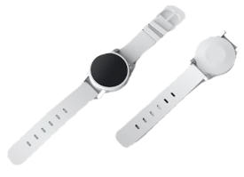

New and Improved!

Novus Watch Series IV
The pinnacle of fashion and tech. This wearable piece is an homage to gilded palaces and minimal regalia, combining nouveou-deco and brutalism influence in a compact, Swiss-made watch.